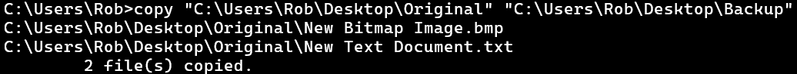
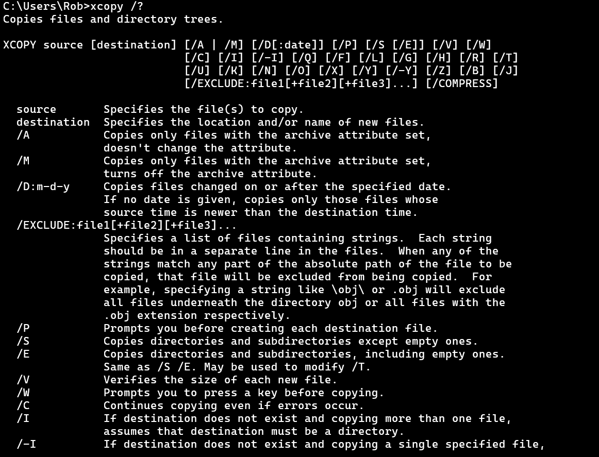

Lesson 2 - Backup Commands
There are three commands we can use to back up data. This lesson introduces the COPY and the XCOPY commands. A future lesson will introduce the third command, ROBOCOPY.
It may seem strange, but we begin be introducing COPY and XCOPY even though we will end up focusing on using ROBOCOPY once it is introduced. This strategy allows us to slowly step up to the more complicated ROBOCOPY by first learning the very basic COPY and then XCOPY commands.
Eveything we learn from using COPY and XCOPY will be directly applicable to using ROBOCOPY so there is no wasted effort here.
Creating Test Environment
We want to make sure that we don't accidentally delete or change files and folders on our computer while we are learning. So we will first create a space with brand new files and folders and call it our "testing environment."
Where you place yours is entirely up to you, but I suggest putting it right on your desktop so it is easy to access the folders.
We are going to create a folder called "Original" (without the quotes) and inside it just place two new files. The easiest way to create new files is to right-click, go to new, and select a file type. It doesn't matter what we name it, I just leave is as the default name. Create two new files this way inside the "original" folder.
This original folder will be our practice data that we want to back up.
Create a new folder called "f1" (no quotes). Inside this folder create two new files of any type just like you did earlier.
Also create a new folder called "f1-empty" but don't put anything in it.
Back in the original folder, create another new folder called "f2" that contains 1 file.
Now create a folder in original called "empty" (again without quotes).
This structure will allow us to test out several aspects of how our program handles copying our stuff. In particular how it handles empty folders and subfolders.
Your final structure should look like this:
- Original
- -f1
- --f1-a
- ---file
- --f1-empty
- --file
- --file
- -f2
- --file
- -empty
- -file
- -file
Now create a second folder on your desktop, or wherever your testing environment is and name it "duplicate" (no quotes). This will be the practice back up location of our practice data. Pretend that this folder wherever you are wanting to back up your data. Maybe an external drive, or to a cloud-connected folder system.
Know the Path!
Be sure you know the correct path to your Original and your Backup folders. If you placed them on your desktop, then the path will be something like:
C:\Users\YOUR USER NAME\Desktop\Originalfor the Original folder and
C:\Users\YOUR USER NAME\Desktop\Backupfor the Backup folder. YOUR USER NAME is replaced by whatever your actual user name is. You will see in the rest of the course that I am using my own user name in the examples.
I recommend enclosing all the paths we will be dealing with in double quotes so they look like
"C:\Users\YOUR USER NAME\Desktop\Backup"While not always necessary, if and folders in the path have a space in the name, command prompt will not go to the expected location. What happens is that without quotes, it assumes that you are separating the paths with spaces. So in the above example, if we didn't have quote it would think the path was C:\Users\YOUR followed by the destination path USER then some unexpected additional text. Since USER isn't a path, it will not do what you are expecting it to do.
Basically, ALWAYS USE QUOTES FOR PATHS!
Commands for Backing-up
There are three commands we will cover that can help us on our mission to back up our files and folders: COPY, XCOPY, and ROBOCOPY.
COPY
The copy command is pretty simple. It has the following syntax:
COPY source destinationwhere source is where the data you want to copy is and destination is where you want it to go. These two words get replaced by their respective paths mentioned in box above.
While not strictly necessary, I am going to recommend using ALL CAPS for command names because it will help us differentiate between portions of our commands as they get more complex.
To test it out, make sure you have your "Original" folder set up and the "Backup" currently empty. Then open a new command prompt window and type in the following command, using your own paths:
COPY "C:\Users\Rob\Desktop\Original" "C:\Users\Rob\Desktop\Backup"The following screen shot shows what I got as a result of typing in the command.
We see the line
C:\Users\Rob>copy "C:\Users\Rob\Desktop\Original" "C:\Users\Rob\Desktop\Backup"where the command is entered. Followed by three lines printed out after the command was issued. The first two lines indicate the two files that were copied. In this case, a file named New Bitmap Image.bmp and another named New Text Document. The third line of the print out just tells us the summary of the outcome that 2 files were copied.
At this point, we open up the Backup folder to check and see that indeed those two files were copied over.
A problem is that we didn't copy over any of the other folders. To do that we need either of the next two commands. We cover this one because it is very straightforward and a pretty obvious name for a command.
XCOPY
The XCOPY command is a good option for creating a backup program but I don't prefer it. We will get more into it in a bit but I don't like how it handles timestamps on files and folders and I like how the other command option, ROBOCOPY has the option to produce a logfile built in, while XCOPY does not. That said, XCOPY is a fine command to use and that is why I am including it here.
Don't be deterred from this section if you think you would rather use ROBOCOPY. Everything we learn about using XCOPY will be directly applicable to using ROBOCOPY. This is another reason to cover XCOPY, it provides a great stepping stone to covering ROBOCOPY.
To begin, delete everything in your practice backup folder. Then type in the exact same command you did for COPY, but this time typing XCOPY instead. For example, on my computer, I typed
XCOPY "C:\Users\Rob\Desktop\Original" "C:\Users\Rob\Desktop\Backup"The result is exactly the same as when we used COPY. However, XCOPY has options to customize it. COPY has options too but it won't copy folders, XCOPY will.
Bring up the help information for the XCOPY command by typing
XCOPY /?This is part of what is printed to the screen when you do this
It's a lot to take in but let's tackle it one piece at a time. The first line tells us the purpose of the command. It says that it Copies files and directory trees. Directory trees is another way of saying folders or paths. In a technical sense these three words refer to different things, but at a basic level we can just say that a directory is the folder. So it copies folders.
Bring up the help information for the COPY command and see what it says the purpose of that command is. If you compare that to what XCOPY is for, you can see why COPY won't being useful for making a backup of our folders, only files.
The next line gives us the syntax of how to use the command. We already made use of the first three parts, XCOPY source [destination]. The letters afterwards are the various options we can use with XCOPY to customize what it does and how it works.
The fact that we didn't use any options when we issued the command means that they must not be required. In fact, anything in square brackets [] is not required. This means that we didn't actually need to include our destination backup folder path either, but since we want it to go to a specific place, we include that.
The next several lines define the various terms present in the syntax like source and destination, and give brief descriptions of all the options available. Although there are a lot, we won't need to worry about most of them. For instance, the /A option will copy only files with an archive attribute. We want a full backup!
Go down the list to the /S and /E options. We are going to use these first. Notice that /S says it copies subfolders, like our f1, but not empty ones. Let's see how that works for ourselves.
Delete everything in the backup folder and run the XCOPY command again but this time include /S at the end. So it should look like this
XCOPY "C:\Users\Rob\Desktop\Original" "C:\Users\Rob\Desktop\Backup" /SBe careful that you use the correct slash when using options. It is the opposite slash than what is in the paths.
After running this command, we get a print out just like we did with the COPY command. It lists the full path and name of the files copied and says it copied 6 files. Open the Backup folder and see that it has copied the folders as well, not just the files. This is great but it hasn't copied the empty folders.
Now, there is some room to customize the program to do what you want. I'm going to say that my way is the best way. When I think about how I want my backup to work, I want it to be a complete copy of whatever is in the original location. To me, that includes any potentially empty folders. Maybe you don't think the same and that's totally fine.
Since I want the empty folders to be included in mine though, I will use the /E option to copy subfolders including empty ones. Reset your Backup folder by deleting the contents and run the command again but this time use the /E instead of the /S option.
Once you do that, you will get the exact same print out as before but the result will include the empty folders being copied over as well.